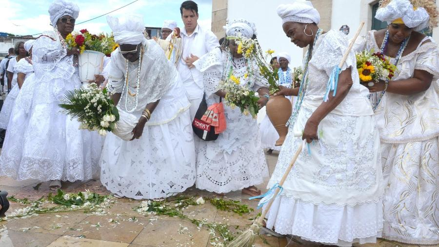
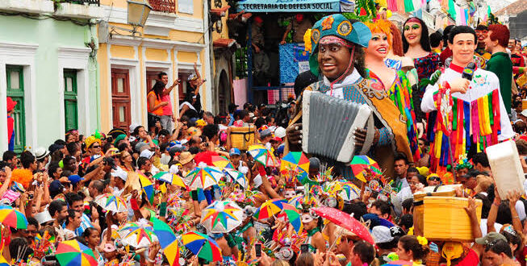
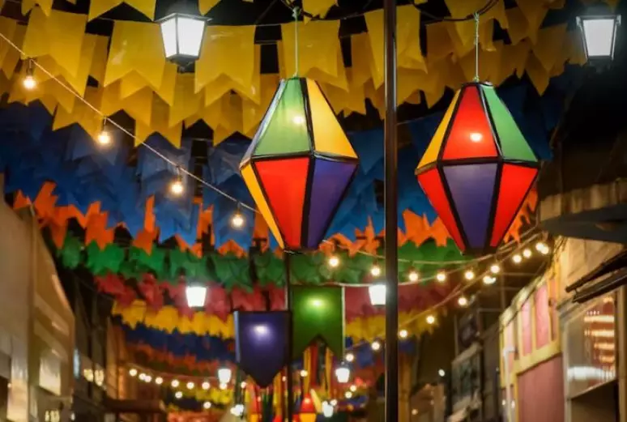
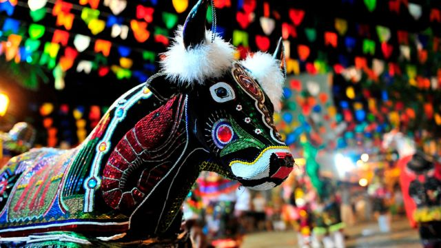

A cultura nordestina é vibrante e diversa, marcada por manifestações populares que refletem a identidade única da região.
Cultura Nordestina
Elementos da Cultura Nordestina
Conheça alguns dos principais elementos que moldam a rica cultura do Nordeste brasileiro:
Forró
Descrubra mais sobre esse gênero musical e dança tradicional do Nordeste do Brasil, que tem uma rica história e um estilo vibrante.
Origens e História
Século XIX: O forró tem suas raízes no século XIX, e suas origens são um mix de influências portuguesas, africanas e indígenas. A palavra "forró" é derivada do termo "forrobodó", que em português arcaico significa "festa" ou "confusão alegre".
Popularização: Sua popularização ocorreu ao longo do século XX, especialmente com a contribuição de figuras icônicas como Luiz Gonzaga, conhecido como o "Rei do Baião". Gonzaga foi fundamental para a divulgação do forró em todo o Brasil e ajudou a popularizar o baião, um dos estilos dentro do forró.
Instrumentos
Sanfona: Também conhecida como acordeão, a sanfona é considerada a alma do forró e é um dos principais instrumentos utilizados no gênero.
Zabumba: Um tipo de tambor grande que é tocado com baquetas e fornece o ritmo característico do forró.
Triângulo: Um instrumento de percussão que adiciona um som metálico e rítmico à música.
Ritmos e Danças
Baião: Um ritmo rápido e animado, geralmente associado à dança enérgica.
Xote: Um ritmo mais lento e romântico, com um estilo de dança mais suave.
Arrasta-pé: Um estilo mais acelerado e com passos que se arrastam, típico das festas juninas.
Frevo
O frevo é um dos ritmos e danças mais emblemáticos do Carnaval no Nordeste do Brasil, particularmente em Recife e Olinda. A sua história é rica e reflete a complexidade cultural da região.
Origens e História
Surgiu no final do século XIX em Recife e Olinda, influenciado por ritmos africanos, indígenas e europeus, com raízes no maxixe.
Ritmos e Música
É conhecido pelo ritmo rápido e contagiante, com uma sonoridade vibrante criada por metais e percussão.
Há três principais estilos de frevo:
Frevo de Rua: Mais dançante e rápido, tocado pelas bandas de frevo durante os desfiles de Carnaval.
Frevo Canção: Estilo mais melódico e lento, popular em apresentações em palco.
Frevo de Bloco: Mantém a energia do frevo de rua, tocado por bandas que seguem os blocos carnavalescos.
Dança
A dança é acrobática e rápida, muitas vezes com o uso de uma sombrinha ou guarda-chuva como parte da coreografia.
Importância Cultural
É um ícone do Carnaval de Recife e Olinda e foi reconhecido pela UNESCO como Patrimônio Cultural Imaterial da Humanidade em 2012.
Modernidade
Continuamente evolui, mantendo sua tradição viva através de novos artistas e grupos dedicados ao gênero.
Literatura de Cordel
A Literatura de Cordel é uma forma de literatura popular que tem suas raízes na tradição oral e impresso no Brasil, especialmente no Nordeste. Originada na Europa e adaptada ao contexto brasileiro, a Literatura de Cordel é uma expressão única da cultura nordestina.
Origens e História
Influências: Originada na Europa, especialmente na Espanha e Portugal, e adaptada ao Brasil durante o período colonial.
Desenvolvimento: Estabelecida no Nordeste brasileiro como uma forma de contar histórias populares em verso.
Características
Formato: OImpressa em folhetos pequenos com capas ilustradas por xilogravuras.
Temas: Inclui lendas, histórias de heróis, eventos históricos e sátiras sociais.
Estilo: Linguagem simples e direta, com rimas e métrica para facilitar a memorização e recitação.
Autores e Influências
Cordelistas: Autores como Leandro Gomes de Barros e João Ribeiro são renomados no gênero.
Influências: Mistura tradições portuguesas, africanas e locais, refletindo a vida cotidiana e as crenças populares.
Importância Cultural
Preservação: Mantém vivas tradições e histórias locais.
Educação e Entretenimento: nsmite conhecimentos e valores culturais.
Artesanato Nordestino
Descubra os aspectos fascinantes do artesanato no Nordeste brasileiro:
Diversidade e Tipos de Artesanato
Artesanato em Madeira: Inclui peças como objetos de decoração, móveis e utensílios de uso cotidiano, com técnicas regionais distintas.
Renda: Trabalhos em renda, como a renda renascença e a renda de bilro, são conhecidos por seus padrões intrincados e são especialmente produzidos na Paraíba e em Pernambuco.
Cerâmica: Conhecida por sua utilidade e beleza, com destaque para as figuras de barro de Caruaru e as peças de Mestre Vitalino.
Tecido e Bordado: Técnicas tradicionais de bordado são utilizadas para criar tecidos com motivos regionais.
Artesanato em Palha: Inclui chapéus e cestas feitas de palha de coqueiro e carnaúba.
Bijuterias e Acessórios: Utilizam materiais como sementes, conchas e pedras para criar acessórios únicos.
Características Culturais e Sociais
Influências e Tradições: O artesanato é influenciado por tradições indígenas, africanas e portuguesas, resultando em peças funcionais e artísticas.
Festas e Eventos: Muitas peças são criadas para festas e celebrações, como o São João e o Carnaval.
Mercados e Feiras: Feiras como o Mercado de São José em Caruaru são centros importantes para o artesanato.
Economia e Sustento: O artesanato é uma importante fonte de renda e preservação cultural para muitas famílias nordestinas.
Preservação e Valorização
Valorização: O artesanato é valorizado por sua autenticidade e papel na preservação das tradições culturais.
Apoio e Promoção: Iniciativas governamentais e organizações trabalham para apoiar os artesãos e promover a continuidade das práticas tradicionais.
Culinária Nordestina
Explore a rica e diversificada culinária do Nordeste brasileiro através dos principais pratos e influências
Influências Culturais e Históricas
Indígenas: As tradições culinárias indígenas contribuíram com ingredientes nativos como mandioca, milho e frutas tropicais, que são amplamente utilizados na culinária nordestina.
Africanas: A influência africana é evidente no uso de dendê (óleo de palma) e na preparação de pratos como a feijoada e a moqueca, que incorporam técnicas e sabores africanos.
Portuguesas: Os colonizadores portugueses introduziram ingredientes como o bacalhau e técnicas de preparo que foram adaptadas à culinária local.
Pratos Típicos
Feijoada: Um prato tradicional à base de feijão preto cozido com várias partes do porco, como carne seca e linguiça. Geralmente servido com arroz, couve, farofa e laranja.
Carne de Sol: Carne bovina salgada e seca, usada em vários pratos.
Baião de Dois: Arroz e feijão misturados com carne seca e queijo coalho.
Moqueca: Ensopado de peixe ou frutos do mar com leite de coco e dendê.
Acarajé: Bolinho de feijão-fradinho frito, recheado com vatapá e caruru.
Cuscuz: Feito de milho ou arroz, pode ser doce ou salgado.
Tapioca: Panqueca de fécula de mandioca, recheada com diversos ingredientes.
Ingredientes Comuns
Mandioca: Utilizada em diversas formas, como farinha de mandioca (para farofa) e tapioca.
Milho: Presente em pratos como o cuscuz e a pamonha.
Dendê: Óleo de palma que dá um sabor característico a muitos pratos.
Leite de Coco: Usado em pratos como moqueca e cocadas.
Festas e Tradições
As festas populares no Nordeste são momentos de celebração, cultura e união. Entre elas, destacam-se o São João e o Carnaval, com danças, músicas e comidas típicas que reúnem comunidades inteiras.
Lavagem do Bonfim
Essa celebração ocorre em Salvador, Bahia, em janeiro. É uma festa de sincretismo religioso, onde baianas vestidas com trajes típicos carregam jarras de água para lavar as escadarias da Igreja do Bonfim. A celebração mistura elementos do catolicismo e das religiões de matriz africana, principalmente o candomblé, criando uma festa de fé, música e dança.

Carnaval Nordestino
Embora o Carnaval de cidades como Rio de Janeiro e São Paulo sejam internacionalmente conhecidos, o Carnaval nordestino, especialmente em cidades como Recife, Olinda e Salvador, oferece uma experiência única. O frevo e o maracatu dominam as ruas de Recife e Olinda, onde blocos e troças carnavalescas desfilam ao som de bandas e orquestras locais. Em Salvador, o ritmo do axé contagia multidões com trios elétricos e blocos, tornando o Carnaval baiano um dos mais intensos do país.

Festa de São João
A Festa de São João é uma das mais populares no Nordeste e acontece no mês de junho, celebrando os santos juninos: São João, Santo Antônio e São Pedro. Essa festa se destaca pelas quadrilhas, danças típicas com coreografias coloridas, e pelo forró, que embala a festa ao som da sanfona, zabumba e triângulo. A gastronomia é outro ponto forte, com pratos típicos como pamonha, canjica, milho cozido e bolo de fubá.

Bumba Meu Boi
Típico do Maranhão, o Bumba Meu Boi é uma das manifestações culturais mais importantes do Brasil, contando com elementos de teatro, dança e música. A encenação gira em torno da morte e ressurreição de um boi, misturando influências indígenas, africanas e portuguesas. O festival acontece principalmente em junho, mas se estende até julho em algumas cidades.

Festa do Círio de Nazaré
Celebrada em Belém do Pará, mas com fortes raízes no Maranhão e em outras partes do Nordeste, essa festa religiosa é uma das maiores procissões católicas do mundo. É uma homenagem à Nossa Senhora de Nazaré e atrai milhões de fiéis em outubro, que seguem uma grande romaria pelas ruas em devoção à santa.